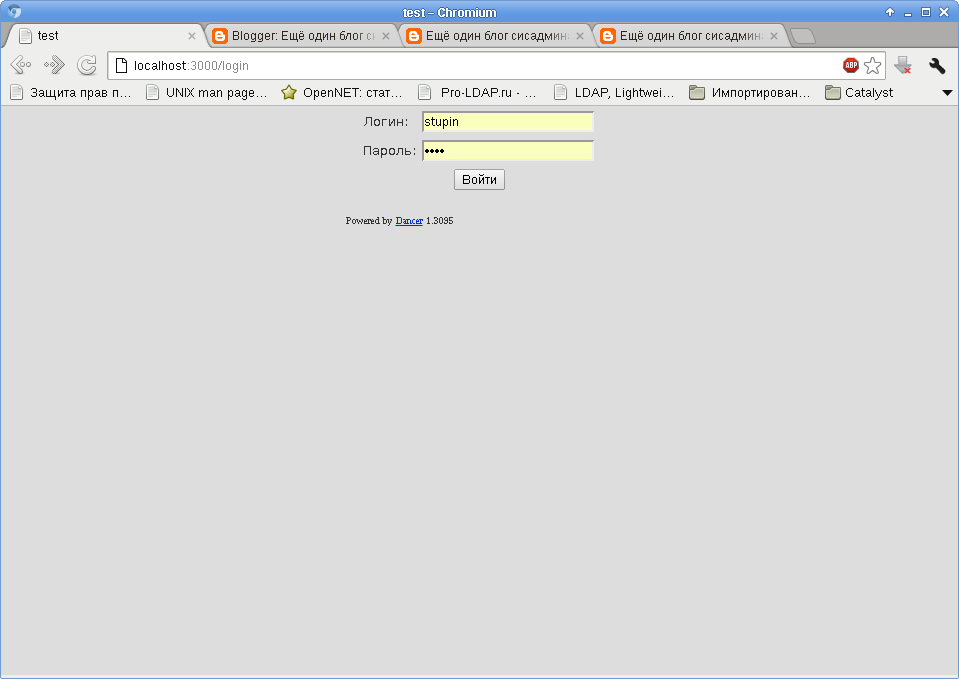
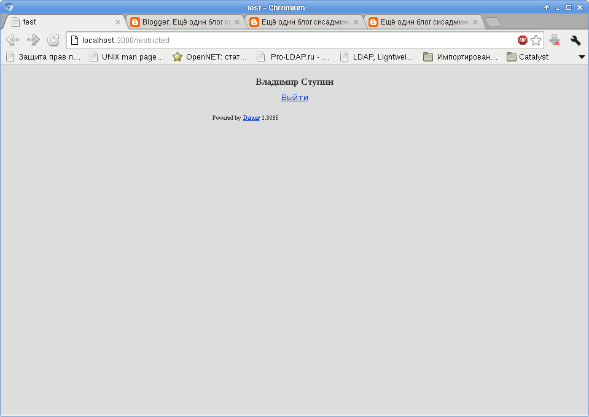

Для хранения сессий Dancer в базах данных существует модуль Dancer::Session::DBI. В настоящее время он поддерживает хранение сессий лишь в MySQL и SQLite. В Debian этот модуль отсутствует, поэтому поставим его с помощью dh-make-perl:
# dh-make-perl --install --cpan Dancer::Session::DBI
Также этому модулю понадобится пакет libjson-perl (фактически это модуль JSON для Perl), для того, чтобы сохранять переменные сессии в поле таблицы MySQL.
# apt-get install libjson-perl
Теперь создадим в базе данных таблицу для хранения сессий. Судя по документации, у неё должно быть два обязательных поля: id - из 40 символов и session_data - текстовое поле, в которое и будут сохранятся переменные сессии. Также полезно добавить поле last_active, которое будет содержать дату и время последнего обновления записи. Это поле можно использовать для периодического удаления устаревших сессий. Создадим таблицу:
mysql > CREATE TABLE `session` ( `id` char(40) NOT NULL, `session_data` text, `last_active` timestamp NOT NULL DEFAULT CURRENT_TIMESTAMP ON UPDATE CURRENT_TIMESTAMP, PRIMARY KEY (`id`) ) ENGINE=InnoDB DEFAULT CHARSET=utf8;
Осталось настроить наше приложение на использование установленного модуля сессий и можно начинать им пользоваться. Настроим приложение, добавив следующие строчки в файл config.yml в каталоге проекта:
session: "DBI" session_options: dsn: "DBI:mysql:database=base;host=localhost;port=3306" table: "session" user: "session" password: "session" serializer: "JSON"
Теперь создадим шаблон страницы, который будет использоваться для запроса имени пользователя и пароля для аутентификации. Шаблон назовём login.tt и положим в каталог views проекта:
<div align="center">
<form method="POST">
<table>
<tr>
<td>
<label for="login">Логин:</label>
</td>
<td>
<input type="text" id="login" name="login">
</td>
</tr>
<tr>
<td>
<label for="password">Пароль:</label>
</td>
<td>
<input type="password" id="password" name="password">
</td>
</tr>
<tr>
<td colspan="2" style="text-align: center;">
<input type="submit" name="ok" value="Войти">
</td>
</tr>
</table>
</form>
</div>
И создадим шаблон страницы, которая будет показываться только пользователям, прошедшим аутентификацию:
<h3 align="center"><TMPL_VAR NAME="name"></h3> <div align="center"><a href="/logout">Выйти</a></div>
Теперь опишем поведение приложения, которое будет показывать эти страницы и обрабатывать ввод пользователя. Откроем файл test.pm в каталоге lib и добавим туда обработчики GET- и POST-запросов:
get '/login' => sub {
template 'login';
};
post '/login' => sub {
my $login = param "login";
my $password = param "password";
if (($login eq "stupin") && ($password eq "test"))
{
session user_id => 1;
session name => "Владимир Ступин";
}
redirect '/restricted';
};
get '/logout' => sub {
session->destroy();
redirect '/login';
};
get '/restricted' => sub {
if (not session('user_id')) {
redirect '/login';
}
template 'restricted', { name => session('name') };
};
Здесь есть два обработчика страницы по адресу /login - первый просто выводит шаблон страницы аутентификации, второй - проверяет введённые логин и пароль, создаёт новую сессию и переадресует посетителя на страницу с ограниченным доступом /restricted, если логин и пароль введены правильно.
Обработчик страницы по адресу /logout. При попадании на неё сессия завершается, а посетитель перенаправляется на страницу /login.
Обработчик страницы по адресу /restricted проверяет, что имеется активный сеанс, в котором есть переменная с именем user_id. Если такой переменной или сессии нет, пользователь переадресуется на страницу входа /login. Если всё в порядке, то пользователю показывается страница с информацией для аутентифицированных пользователей.
К сожалению, не всё с модулем Dancer::Session::DBI оказалось так гладко. Пришлось немного доработать его напильником, чтобы русские буквы сохранялись в базе данных в правильной кодировке и чтобы он не выдавал ошибку, если пользователь приходит с идентификатором сессии, которой нет в базе.
Первая доработка в файле /usr/share/perl5/Dancer/Session/DBI.pm выглядит следующим образом:
sub _dbh {
my $self = shift;
my $settings = setting('session_options');
# Prefer an active DBH over a DSN.
return $settings->{dbh}->() if defined $settings->{dbh};
# Check the validity of the DSN if we don't have a handle
my $valid_dsn = DBI->parse_dsn($settings->{dsn} || '');
die "No valid DSN specified" if !$valid_dsn;
if (!defined $settings->{user} || !defined $settings->{password}) {
die "No user or password specified";
}
# If all the details check out, return a fresh connection
my $dbh = DBI->connect($settings->{dsn}, $settings->{user}, $settings->{password});
if ((defined $dbh) && (defined $settings->{charset}))
{
my $sth = $dbh->prepare("SET CHARACTER SET ?");
$sth->execute($settings->{charset});
$sth->finish();
$dbh->{mysql_enable_utf8} = 1 if $settings->{charset} eq "UTF8";
}
return $dbh;
}
Вторая доработка в этом же файле выглядит следующим образом:
sub retrieve {
my ($self, $session_id) = @_;
my $session = try {
my $quoted_table = $self->_quote_table;
my $sth = $self->_dbh->prepare_cached(qq{
SELECT session_data
FROM $quoted_table
WHERE id = ?
});
$sth->execute( $session_id );
my ($session) = $sth->fetchrow_array();
$sth->finish();
$session = "{}" unless defined $session;
$self->_deserialize($session);
} catch {
warning("Could not retrieve session ID $session_id - $_");
return;
};
return bless $session, __PACKAGE__ if $session;
}
Первая доработка позволяет указать кодировку клиента, которую клиент должен установить сразу после подключения к базе данных. Настроим кодировку в файле настройки проекта config.yml, вместе с ней настройки модуля сессий примут следующий вид:
session: "DBI" session_options: dsn: "DBI:mysql:database=base;host=localhost;port=3306" table: "session" user: "session" password: "session" charset: "UTF8"
Само собой, это приложение лишь демонстрирует использование сессий в Dancer. В реальном приложении нужно написать функции аутентификации, использующие таблицу пользователей и функции, ограничивающие доступ к страницам и операциям, использующие таблицы групп пользователей и их прав. Напоследок, пара снимков экрана с двумя страницами:
 